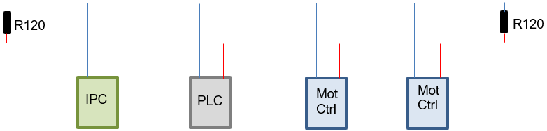
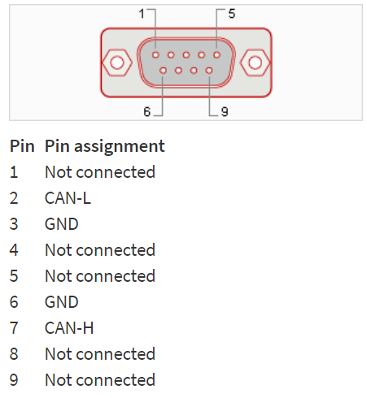
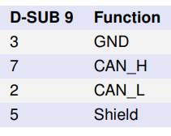
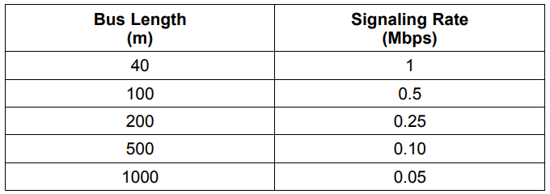
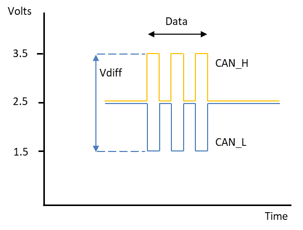
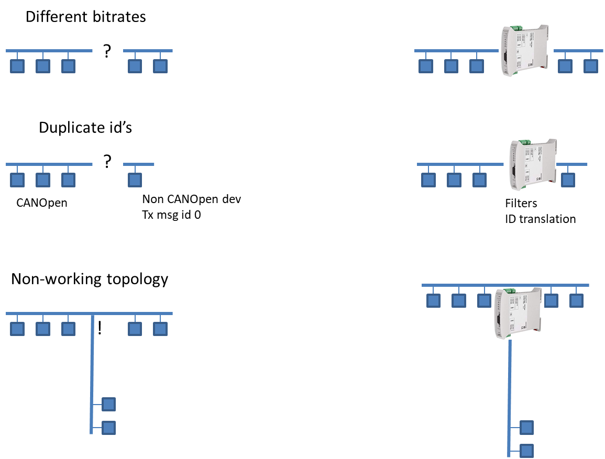
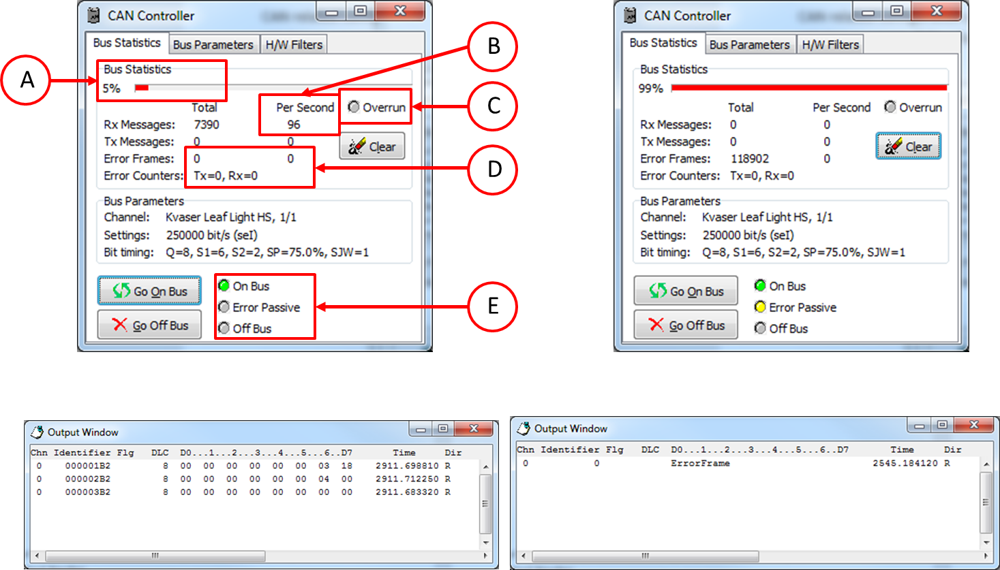
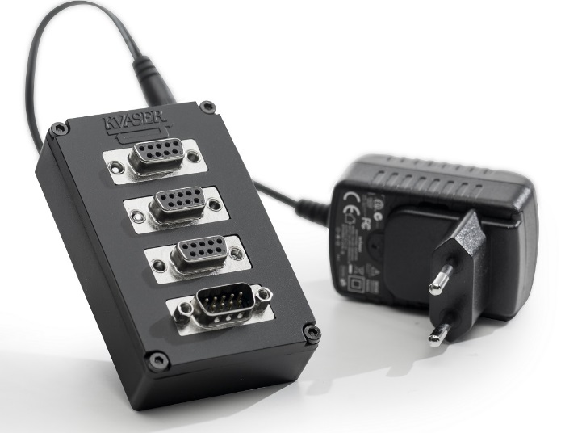

CAN Communication
Updated 29.07.2024
Overview
Introduction
CAN
Controller Area Network (CAN) is a robust bus standard designed to enable microcontrollers and devices to communicate with each other without a host computer. It is widely used in automotive and industrial applications due to its ability to provide reliable communication over a simple two-wire bus. CAN ensures data integrity with error detection and retransmission mechanisms, making it ideal for real-time control systems.
CANopen
CANopen is a high-level communication protocol and device profile specification that is based on the CAN protocol. The CANopen umbrella covers a network programming framework, device descriptions, interface definitions and application profiles. CANopen provides a protocol which standardizes communication between devices and applications from different manufacturers. It has been used in a wide range of industries, with highlights in automation and motion applications.
CAN bus topology
CAN communication takes place over two differential lines CAN_L and CAN_H. Topology of the CAN bus is a bus having two ends. Star-shaped or ring-shaped wiring topologies do not work. Two termination resistors (nominally 120 ohm) need to be connected to the bus ends. Measured impedance between CAN_L and CAN_H should then be around 60 ohm. This measurement should be done with the devices powered off.
Some CAN devices have optional CAN bus termination built in. Such a termination can be enabled via a physical switch and sometimes even electronically - follow the manufacturer's instructions for enabling/disabling these terminations. When using such terminations, select devices connected closest to the end of the bus. Navitrol IPC (when using Peak/Kvaser CAN card) does not have any bus termination.

CAN nodes are connected to bus using T-connector and a short stub or a pass-through connection. Maximum stub length depends on the speed of the communication. Stub lengths being too long result in problems in physical signaling. In addition to active nodes, it is recommended to add one extra connection point to CAN bus -- to be used for CAN analyzer.
CAN bus connection - details
Navitrol IPC equipped with a CAN card uses "standard" kind of 9 pin D connector for connecting to CAN bus. Physically CAN is a two-wire differential signal, those two wires being
-
CAN_L -- Pin #2 in D9 connector
-
CAN_H -- Pin #7 in D9 connector
-
GND -- Pin #3 in D9 connector
-
Note: Other pins -- there is NO true "de-facto" standard -- always check what is the case!


Figure 1: Peak D9 pin configuration on the left, Kvaser on the right.
In many cases connecting two wires (CAN_L/CAN_H) is enough as long as proper type of cable is used. CAN cable should always be a shielded twisted pair cable. In order to improve noise immunity, the shield (in single shielded cable) should be connected to CAN GND in each CAN node and then finally to common ground at one single location.
In Navitrol IPC CAN connection (Peak/Kvaser) CAN_GND is PIN #3 in D9 connector. This is typically regarded as a standard pin for CAN_GND, but it should be noted that it may not be connected at all or may be connected for other purposes in some CAN devices. So, if in doubt, then do not connect.
In extremely noisy conditions -- even double shielded cable can be used. In such a case inner shield should be connected to CAN_GND as explained before and outer shield again connected to ground at one location.
In many CAN interfaces PIN #5 is used for connecting the outer Shield. In real life this is even less common than CAN_GND being connected to pin #3. For example in case of Peak pin #5 is not connected. So, be sure before connecting to any CAN node.
In addition to data, ground and shield, CAN connectors may have connection for power supply out (master) or power supply in (slave). Navitrol IPC CAN connector does not have supply power capability.
Requirements
- CAN-card with SocketCAN support. Most common ones used are Kvaser and Peak CAN-cards.
- Bitrate for each CAN device on the bus must be the same
- CANopen node ID values must be between 1 and 127. In addition, all node IDs must be unique
Dependencies
Setup
Quick Start
- Connect CAN bus to the IPC and to other CAN-devices on the same bus. Verify that your CAN-bus topology is setup correctly
- Configure unique node ID for each CANopen device (between 1 and 127)
- Set the same bitrate for each CAN-device connected to same bus
- Choose the NMT-master and sync-producer of the system. Most often Navitrol
- Configure other CAN-devices on the bus
- Configure Navitrol CAN interface parameters
- Start Navitrol. If there are errors in the system, see Troubleshooting section
Parameters
| Name | Type | Default Value | Description |
|---|---|---|---|
| can_enabled | Int | 1 | Enables CAN communication. NOTE: If odometry source is CAN, then CAN is always enabled and this parameter is ignored. For more information on odometry source, see Odometry Source |
| navigation_software_node_id | Int | 0 | Navitrol IPC CANopen node ID. Mandatory for several machine types as well as for certain functions (like heartbeat) 0 = not defined, 1-127 = valid node ID |
| can_ch | Int | 0 | Primary CAN channel number. Assumes device names like can0, can1,... 0 and 1 are the most common channel numbers |
| can_bitrate_k | Int | 250 | Primary CAN bus bitrate [Kbit/s]: 125, 250, 500 or 1000 |
| can_nmt_master | Int | 1 | Enables Navitrol to work as CANopen NMT master on primary CAN. 0 = No 1 = Yes NMT master functionality is required whenever Navitrol configures any slave nodes using CANopen SDO messages |
| can_sync | Int | 1 | Navitrol's (Primary CAN) role for CANopen SYNC messages: 0 = None, 1 = SYNC producer, 2 = SYNC consumer Most often Navitrol is the Sync producer |
| --- | --- | --- | --- |
| can_heartbeat_producer_enable | Int | 0 | Enables Navitrol to be Heartbeat producer for primary CAN navigation_software_node_id must be defined (>0) for hearbeat messages to be sent |
| can_sync_rx_mode | Int | 1 | Select sync receive PDOs: 0 = Legacy (all predefined), 1 = True CANopen SYNC PDOs only. Ignored if can_sync=0 or no CANopen SYNC PDOs exist |
| can_primary_any_id | Int | 0 | Primary CAN valid PDO IDs that can be registered: 0 = Only valid PDO IDs can be registered, 1 = Any ID can be registered Any message ID can be registered as RPDO when setting this parameter to 1. There is however a risk that non CANopen compliant ID conflicts with CANopen specification in such a way that the communication won't work properly. This parameter should never be set to 1 unless Navitec instructs to do so. |
| can_send_nmt_start_always | Int | 0 | Defines when Navitrol (Primary CAN) sends CIA301_NMT_CMD_START: 0 = Only on state change, 1 = Periodically every 1 second |
| can_sdo_interval_ms | Int | 100 | Primary CAN SDO message interval [ms] used by Navitrol |
| can_sdo_timeout_ms | Int | 500 | Primary CAN SDO message response timeout [ms] used by Navitrol |
| can_sdo_write_from_file | Int | 0 | Enables SDO writes from file sdo_write.txt for primary CAN. CANopen specific. If set to 1, Navitrol reads the file and sends SDO commands defined in that file (See Appendix SDO Write configuration). This feature enables any CANopen device configuration changes without changes to Navitrol SW. |
| log_can | Int | 0 | Log primary CAN bus details, including all messages bytes. 2 = max level |
| log_can2 | Int | 0 | Log secondary CAN bus details, including all messages bytes. 2 = max level. |
| log_can_msgs | Int | 0 | Log parsed and built can message data. |
| log_can_summary | Int | 0 | Log CAN msg summary. 0 = on ERR condition only, 1 = periodically. |
Secondary interface
Sometimes the AGV has a secondary CAN bus as well. These parameters are named with a prefix can2_. Otherwise the parameters are mostly the same as with the primary CAN bus. See Navitrol parameters for Secondary CAN interface parameters.
How to use
CAN wiring & configuration rules
The following rules shall be followed when wiring and configurating CAN-network
-
CAN bus topology must be "two end" bus terminated at both ends using nominally 120 ohm resistor (between CAN_L and CAN_H).
-
CAN cable shall be shielded twisted-pair cable.
-
CAN_GND shall be connected to earth at single point.
-
If connecting outer shield in double shielded cable, it shall be connected to earth at single point.
-
When using T-connectors (or alike), stub lengths shall be kept as short as possible.
-
Pay attention not to place CAN wiring next to major disturbance sources, like inverters and motors.
-
Do not connect CAN devices with different bitrate to same bus.
-
Always assure that all CAN devices are configured to send unique message IDs (unique node IDs in CANopen).
-
Do not connect mixed type CAN devices (like CANopen and non-CANopen) to same bus unless you know that it is ok.
The electrical characteristics of the CAN bus cable restrict the cable length according to the selected bit rate. The High-Speed ISO 11898 Standard specifications are given for a maximum signaling rate of 1 Mbps with a bus length of 40 m and a maximum of 30 nodes. It also recommends a maximum un-terminated stub length of 0.3 m. You can use cabling up to 250 meters with the bitrate of 250 kbit/s. The maximum bus length with a bit rate of 10 kbit/s is 1 km, and the shortest with 1 Mbit/s is 40 meters. In the AGV world this is not a limiting thing.

Maximum stub length on the other hand is not that simple thing. This depends on many details like transceiver characteristics. Even if the Standard recommends a maximum un-terminated stub length of 0.3 m with a 1 Mbps signaling rate, it is possible to use longer stub lengths in real world -- up to 5 m. It is difficult however to define the limit without knowing lot of details from HW, so the shorter, the better.
CAN bus voltage levels
Nominal voltage levels on CAN bus are shown in picture below. When no data is being sent both CAN_H and CAN_L should be very close to each other around 2.5V. When data is being sent, then voltage for CAN_H should be higher and CAN_L lower for '0' bit on the bus.
CAN is differential signal and therefore the Vdiff is the meaningful value, when detecting data. When the Vdiff value on the bus is less than 0.5V, the bus is considered to be in a recessive state. Vdiff values greater than 0.9V indicate that the bus is in a dominant state. Lastly, for Vdiff values between 0.5V and 0.9V, the bus state is undefined.

CAN nodes & messages
When setting up CAN bus and configuring CAN devices, one must be careful to have same bitrate set to each connected device and set unique message IDs (in CANopen unique node IDs -- valid node ID range 1...127) for each device.
When having CAN devices of different type (like CANopen, basic CAN,..) on same bus it is even more important to verify already at design/configuration phase that all CAN message IDs are unique. Duplicated IDs cause both confusion and potentially low level bus errors.
CAN drivers
Navitrol uses SocketCAN as the CAN interface and SocketCAN is currently only supported CAN interface. Linux Debian 9 Stretch and later has SocketCAN supported out of the box. You can see the CAN interface as a "network interface" (command ip a shows can0 for example as an available network interface) on Linux.
-
Any HW supported by SocketCAN or having SocketCAN drivers installed can be used with SocketCAN interface.
-
NOTE: SocketCAN and manufacturer specific non SocketCAN compliant drivers are typically mutually exclusive. Installing such SocketCAN conflicting driver may disable (blacklist) SocketCAN drivers completely. See Uninstalling Kvaser or PeakCAN native CAN drivers for more info.
Navitrol supports two CAN buses
Navitrol supports two simultaneous CAN interfaces, although typically only one is used.
Navitrol Primary CAN bus is meant for CANopen type of nodes. In many cases it is assumed that Navitrol is the CANopen bus master as well and Navitrol primary CAN interface expects CANopen compliant messaging from all nodes.
Some non CANopen devices can be connected to CANopen bus without issues. Some non-CANopen devices however use such non-configurable settings (like message IDs) that they can't or shouldn't be connected to Navitrol Primary CAN bus. If there are non-CANopen devices sending messages with IDs conflicting with CANopen specification, then those devices need to be connected in a separate CAN bus. For that purpose Navitrol supports two simultaneous CAN buses, primary and secondary. Use of two buses makes it also possible to connect to CAN devices with different bitrates.
NOTE: There are also COTS products (CAN bridges) that make it possible to connect non-CANopen compliant devices or even devices with different bitrates to Navitrol Primary CAN bus. CAN-bridges support message ID translation/filtering that makes this possible.

Troubleshooting
CAN bus message logging
Navitrol logs always some amount of events related to CAN communication and CAN related issues. If one wishes to see all data sent to CAN bus and received from CAN bus, byte by byte, this can be accomplished by enabling can logging parameters.
Summary of received/not received objects is logged periodically whenever some of the expected CAN objects are missing. By setting parameter log_can_summary to 1, this summary is logged periodically even if there are no errors.
Examples of logged data are below. All these are subject to change when it comes to details. Key phrases, marked with double quotes in title (like "RX_RAW"), in the log will not change whenever it is possible to do so.
Obligatory receive objects never received i.e. "NotRxed"
0.4447 [08:1] CAN: PRI Node 30 Obj 19Eh NotRxed
0.4447 [08:1] CAN: PRI Node 30 Obj 29Eh NotRxed
0.4447 [08:1] CAN: PRI Node 31 Obj 19Fh NotRxed
0.4447 [08:1] CAN: PRI Node 31 Obj 29Fh NotRxed
NOTE: Available as shown here starting from Navitrol version 6.30.00
Navitrol versions 6.28 and older log only first missing object without node ID.
Received CAN messages, byte by byte: "RX_RAW" (params.log_can > 0)
234.3283 [08:6] CAN_INTE: RX_RAW PRI 2BCh dlc 8 00 00 00 00 00 00 04 00
234.3324 [23:6] CAN_INTE: RX_RAW SEC 1B2h dlc 8 00 00 00 00 00 00 03 DF
-
SEC -- PRIMARY/SECONDARY bus
-
1B2h -- Message id in hex
-
dlc 8 -- Message length in bytes
-
00 00 00 00 00 00 03 DF -- Message byte by byte
Transmitted CAN messages, byte by byte: "TX_RAW" (params.log_can > 0)
307.9164 [08:6] CAN_INTE: TX_RAW PRI 1B2h dlc 8 00 00 00 00 00 00 03 63
307.9165 [23:6] CAN_INTE: TX_RAW SEC 2BCh dlc 8 00 00 00 00 00 00 04 00
Log line interpretation is exactly same as before in case of RX message.
NOTE: you can pick both RX_RAW and TX_RAW, by using "X_RAW" as a key phrase.
"RX_SUM" (ERROR OR params.log_can_summary > 0)
53.4326 [08:6] CAN: RX_SUM
53.4326 [08:6] CAN: RX_SUM PRI node 50 Obj 232h XXX_IN1 rxed/req 0/1, age --- ms
53.4326 [08:6] CAN: RX_SUM PRI node 50 Obj 332h XXX _IN2 rxed/req 0/1, age --- ms
53.4326 [08:6] CAN: RX_SUM PRI node 50 Obj 432h XXX _IN3 rxed/req 1/1, age 732 ms
53.4326 [08:6] CAN: RX_SUM SEC node 60 Obj 23Ch BUS2_1 rxed/req 0/1, age --- ms
53.4326 [08:6] CAN: RX_SUM SEC node 60 Obj 33Ch BUS2_2 rxed/req 0/1, age --- ms
-
SEC -- PRIMARY/SECONDARY bus
-
60 - node ID of the CAN device
-
33Ch -- Message id in hex
-
rxed/req 0/1 -- Received at least once/required; if required message has not been received at all, then ERROR_CAN_ALL_NODES_NOT_OPER is generated (see troubleshooting section for more information)
-
--- -- Age of the message in ms (--- means that message has never been received)
CAN: "Summary of registered objects" (at startup)
At startup Navitrol logs also a summary of all registered objects, i.e. objects transmitted or parsed by Navitrol. If Navitrol has been running for a long time, this info is not yet available in standard log file, but can still be found in startlog.txt.
0.3924 [08:6] CAN: Summary of registered objects
0.3924 [08:6] CAN: Rx00: PRI node 50 COBid 0232h SYNC 1 TimeoutTime 50
0.3924 [08:6] CAN: Rx01: PRI node 50 COBid 0332h SYNC 1 TimeoutTime 50
0.3924 [08:6] CAN: Rx02: PRI node 50 COBid 0432h SYNC 1 TimeoutTime 50
0.3924 [08:6] CAN: Rx03: PRI node 50 COBid 0532h SYNC 1 TimeoutTime 50
0.3924 [08:6] CAN: Rx04: SEC node 60 COBid 023Ch SYNC 1 TimeoutTime 50
0.3924 [08:6] CAN: Rx05: SEC node 60 COBid 033Ch SYNC 1 TimeoutTime 50
0.3924 [08:6] CAN: Tx00: PRI node 50 COBid 01B2h SYNC 1 TxInterval 30 TxInterval min 10
0.3924 [08:6] CAN: Tx01: PRI node 50 COBid 02B2h SYNC 1 TxInterval 30 TxInterval min 10
0.3924 [08:6] CAN: Tx02: PRI node 50 COBid 03B2h SYNC 1 TxInterval 30 TxInterval min 10
0.3924 [08:6] CAN: Tx03: SEC node 60 COBid 01BCh SYNC 1 TxInterval 30 TxInterval min 10
0.3924 [08:6] CAN: Tx04: SEC node 60 COBid 02BCh SYNC 1 TxInterval 30 TxInterval min 10
-
Tx04 -- message type (Rx, Tx, Od)
-
SEC -- PRIMARY/SECONDARY bus
-
60 -- node ID of the CAN device whose objects are registered -- typically used as a basis for message parsing and building.
-
1B2h -- Message id in hex
-
SYNC 1 -- Tells whether message is a SYNC object or not. SYNC objects are used for synchronizing all operation in Navitrol.
-
TimeoutTime 50 -- Receive message timeout time. If receive interval exceeds this limit, error ERROR_CAN_RX_TIMEOUT is generated (see troubleshooting section for more information).
-
TxInterval 30 TxInterval min 10 -- Maximum and minimum transit intervals for each transmit object.
Troubleshooting CAN communication
Navitrol itself can detect some CAN related configuration issues, missing CAN nodes/objects and some major issues on the bus. It should be noted that Navitrol does have only limited capability to detect low level CAN bus related issues. Therefore truly comprehensive troubleshooting and analysis requires also other means, like use of a CAN analyzer.
CAN communication issue checklist
Typical problems are
-
Cabling related issues
-
Bus topology
-
Termination missing or incorrect
-
CAN_H/CAN_L "cross-connected"
-
Ground/shield connections
-
-
Sometimes it is assumed that powering through CAN interface is a standard feature (Navitrol IPC CAN connector does not have supply power)
-
CAN node missing or connected in a wrong way
-
One or more CAN nodes configured in wrong way (bitrate or node IDs in CANopen)
-
Mixing basic CAN and CANopen -- resulting in duplicate message IDs, maybe message IDs that conflict with CANopen basic mechanisms.
-
Damaged CAN interface
Additional things to verify:
-
Check that all devices are powered
-
Verify that CAN wiring & configuration rules have been followed.
-
Verify that configuration for CAN devices is ok
-
Same bitrate for all devices
-
Unique node ID (1...127) for all CANopen devices
-
Basic CAN message IDs do not conflict with CANopen ones
-
-
Each CANopen device should send bootup message at startup (0x700 + node ID)
-
CAN bus voltages
-
In Navitrol
-
Verify that Navitrol's CAN related parameters are set up correctly
-
Check for any CAN related ERROR active. See Error Descriptions for different CAN-errors
-
Verify that Navitrol is receiving CAN messages as expected: "RX_RAW" logging
-
Verify that Navitrol is receiving CAN messages from all configured nodes: "RX_SUM" logging
-
If any of the CAN devices on the bus is configured for wrong bitrate, then it typically messes all communication. In such a case it is often necessary to connect (or disconnect) CAN devices to the bus one by one and first find out which one of the devices causes the issues.
CAN Analyzer
Even if the communication seems to work kind of ok, it is possible that there are issues that result in collisions, delays and time jitter in communication. In case of unclear problems, it is often good policy to connect a CAN analyzer to the bus to check if there are detectable issues. For example errors in basic CAN device configuration (different bitrates, duplicated node IDs,..) often result in "Error frames" or other errors that can be detected using CAN analyzer SW. It is not that clear that all these errors are detected by Navitrol at all. See picture below.

Most useful windows for troubleshooting are "Bus Statistics" and "Output Window". Left hand pictures show contents in "normal" case without any issues. Bus Statistics details that should be checked are marked in picture. Right hand side on the other hand shows same windows in a case where physical bus has issues.
In some AGV's it is not that straightforward to physically connect to the bus. In those cases CAN hub (like Kvaser T-Cannector, see pic below) helps a lot.

SDO errors
SDO errors might occur if something was done incorrectly during the commissioning. If SDO Response message starts with 80 instead of 60 the SDO message has failed. The error reason is written to the last four data bytes and in that case the error can be googled.
| SEND/RESPONSE | COB ID (in hex 0x) | dlc | Data bytes (in hex 0x) | Description |
|---|---|---|---|---|
| SEND | 601 | 8 | 2F 81 2F 00 00 00 00 00 | SDO Upload request: Trying to set baud rate to 0 kbs |
| RESPONSE | 581 | 8 | 80 81 2F 00 32 00 09 06 | Response not ok. Error code 0609 0032h: Value of parameter written too low. |
Failed SDO message example
Appendix A
SDO write configuration
Navitrol supports writing OD parameters at startup time to any CANopen slave. Some of these write commands are "hard-coded" in Navitrol, but it is also possible to define any other SDO writes using ASCII-file sdo_write.txt, format explained below.
#--------------------------------------------------------------------------
# Sample file -- sdo_write.txt
#--------------------------------------------------------------------------
#
# Any data on a line after character '#' is ignored (regarded as comment)
#
# Mode, node ID, type, Idx.SubIdx, value
# - mode shall be
# * WRITE -- absolute write; value is written to OD as specified in file
# - Supported types are: I8 I16 I32 U8 U16 U32 F
# - Idx.SubIdx are both decimal or both hex (not mixed)
# - Integer values can be expressed in decimal or hex, prefix for hex values shall be 'x' or '0x'
# - spaces are ignored - can't have spaces separating items in single value though
#
# NODE 63
#
WRITE, 63,U8,0x4310.1,100 # VEL_Kp - PID-Position Controller - proportional gain
WRITE,63,I16,1500.09,x100
WRITE,63, I32, 0x49A0.20, x6400
WRITE, 40 , U16 , 1500.09 , x300
#
# NODE 22
#
WRITE, 22, I16, 1500.09, x100
#
# NODE 0x20 i.e. 32
#
WRITE,0x20, I16, 1500.09, x100